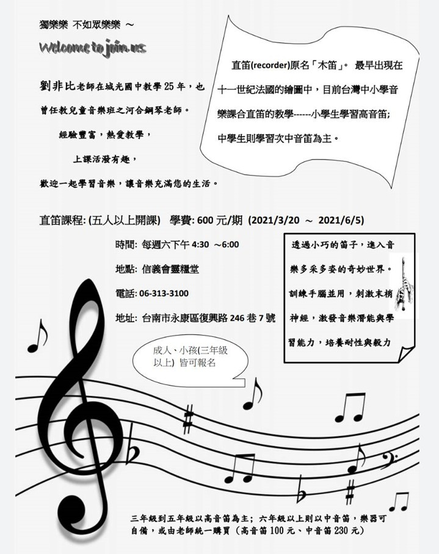

基督教臺灣信義會
靈糧堂 週報

1. 今日3/7(日)為聖餐主日，請弟兄姊妹預備心參加。
2. 今日3/7(日)要拍大合照，請弟兄姊妹會後能預留一些時間。
3. 今日福音主日，邀請張庭嘉內科醫師分享「耶穌是我的Google Maps」; 3月14日邀請伊甸盲人喜恩合唱團，主題「恩典之路」，請弟兄姊妹踴躍邀請親朋好友來參加。
4. 活力俱樂部第40期開課於3/20(六)～6/5(六)下午4:30～7:00開課，課程有兒童繪畫班初階、進階，手作，成年、兒童直笛班，歡迎報名參加。

5. 林月秀姊妹(林麗美姊姊)於3月4日受洗，願神保守她的信心和愛主的心能不斷增長。
6. 教會副堂約櫃屋主日愛筵後輪流打掃日期： 3月份以勒/佳美小組，願神賜下越服事越甘甜之恩。
7. 因應現在全球疫情居高不下，除了需要確實戴口罩、量體溫之外，從即日起，每週需填寫「健康自我聲明表」，以便日後政府可以查閱並做出正確的病例判斷。
星期 |
時間 |
聚會名稱 |
|---|---|---|
主日 |
上午10點00分 |
主日崇拜、學青牧區、兒童主日學 |
主日 |
下午12點30分 |
長青小組、以勒小組、約書亞小組、保羅小組 佳美小組、盛愛小組、帝寶小組 |
週三 |
晚上08點00分 |
美女小組 |
週四 |
早上09點30分 |
良善小組 |
週四 |
晚上07點15分 |
喜樂小組 |
週四 |
晚上08點00分 |
凡恩小組 |
週五 |
晚上07點30分 |
牛棚小組、得勝小組、百合小組 |
週五 |
晚上08點00分 |
1+7小組 |